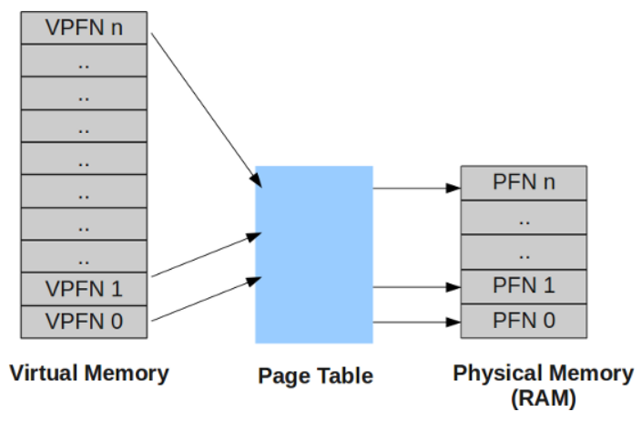
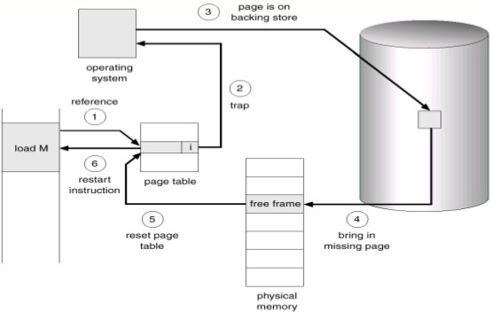
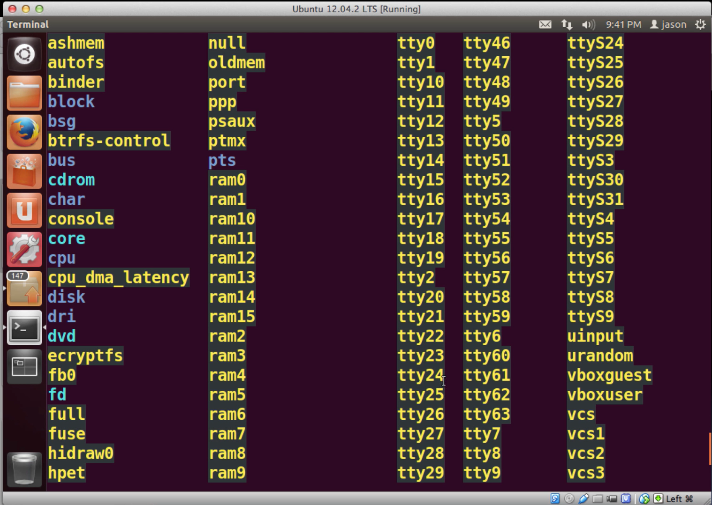

Memory Management
Memory Management
The memory management subsystem is one of the most important parts of the operating system. Since the early days of computing, there has been a need for more memory than exists physically in a system. Strategies have been developed to overcome this limitation and the most successful of these is virtual memory. Virtual memory makes the system appear to have more memory than it actually has by sharing it between competing processes as they need it.
Virtual memory does more than just make your computer's memory go further. The memory management subsystem provides :
♜ Large Address Spaces
The operating system makes the system appear as if it has a larger amount of memory than it actually has. The virtual memory can be many times larger than the physical memory in the system.
♜ Protection
Each process in the system has its own virtual address space. These virtual address spaces are completely separate from each other and so a process running one application cannot affect another. Also, the hardware virtual memory mechanisms allow areas of memory to be protected against writing. This protects code and data from being overwritten by rogue applications.
♜ Memory Mapping
Memory mapping is used to map image and data files into a processes address space. In memory mapping, the contents of a file are linked directly into the virtual address space of a process.
♜ Fair Physical Memory Allocation
The memory management subsystem allows each running process in the system a fair share of the physical memory of the system.
♜ Shared Virtual Memory
Although virtual memory allows processes to have separate (virtual) address spaces, there are times when you need processes to share memory. For example there could be several processes in the system running the bash command shell. Rather than have several copies of bash, one in each processes virtual address space, it is better to have only one copy in physical memory and all of the processes running bash share it. Dynamic libraries are another common example of executing code shared between several processes. Shared memory can also be used as an Inter Process Communication (IPC) mechanism, with two or more processes exchanging information via memory common to all of them. Linux supports the Unix TM System V shared memory IPC.
Virtual Memory
The concept of virtual memory is one of the very powerful aspects of memory management. Since the initial era of computers the need of memory more than the existing physical memory has been felt. Over the years, many solutions were used to overcome this issue and the most successful of them has been the concept of virtual memory.
Virtual memory makes your system appear as if it has more memory than it actually has. This may sound interesting and may prompt one to as how is this possible. So, lets understand the concept.
☛ To start, we must first understand that virtual memory is a layer of memory addresses that map to physical addresses.
☛ In virtual memory model, when a processor executes a program instruction, it reads the instruction from virtual memory and executes it.
☛ But before executing the instruction, it first converts the virtual memory address into physical address.
☛ This conversion is done based on the mapping of virtual to physical addresses that is done based on the mapping information contained in the page tables (that are maintained by OS).
The virtual and physical memory is divided into fixed length chunks known as pages. In this paged model, a virtual address can be divided into two parts :
♓ An offset (Lowest 12 bits)
♓ A virtual page frame number (rest of the bits)
When ever the processor encounters a virtual address, it extracts the virtual page frame number out of it. Then it translates this virtual page frame number into a physical page frame number and the offset parts helps it to go to the exact address in the physical page. This translation of addresses is done through the page tables.
Theoretically we can consider a page table to contain the following information :
☛ A flag that describes whether the entry is valid or not.
☛ The physical page frame number as described by this entry.
☛ Access information regarding the page (like read-only, read-write etc).
A page table is accessed through virtual page frame number using it as offset for entries in the page table. For example, a virtual page frame number of "2" points to the entry "1" in the page table (the entry numbers begin with "0" ).
It may happen that a processor goes to a processes page table entry with a virtual page frame number and finds the entry as invalid. In this case it is the processor responsibility to pass the control to kernel and ask it to fix the problem. Different processors pass the control in different ways but this phenomenon is known as a "page fault". But if the entry was valid then processor takes the physical page frame number, multiplies with the size of the page to get the base address of the physical page and then adds the offset to get to the exact physical address.
So now we understand that through the concept of virtual memory, each process thinks that it has all range of virtual address at its disposal and hence this concepts make the system appear as if it has more physical memory than actually available.
Demand Paging
In the previous sectioned we learned that if the processor goes to the processes page table with a virtual page frame number for which no entry was present in the table then two cases arise.
☛ Either the process has tried to access an invalid memory address.
☛ The physical page corresponding to the virtual address was not loaded into physical memory.
Out of the two cases above, the case 1 is the case where the process tries to memory address which it is not allowed. In this case a page fault is generated and the kernel terminates the process.
While in case "2", as already explained, the physical page corresponding to the virtual address is not yet loaded into physical memory. In this case also a page fault is generated and the kernel then tries to bring the required memory page into physical memory from hard disk.
Since this operation of bringing a page from hard disk into physical memory is time consuming so by this time a context switch between processes happens and some other process is brought into execution. Meanwhile the page of the earlier process is brought into physical memory and the page tables are updated and then this process is brought back into execution again from the same instruction that caused the "page fault".
This is known as demand paging where all the memory pages corresponding to a process are not present in the physical memory at any given time. This saves the physical memory from clogging up with non-required memory pages while when necessary these pages can be brought into physical memory through page fault.
Caches
If you were to implement a system using the above theoretical model then it would work, but not particularly efficiently. Both operating system and processor designers try hard to extract more performance from the system. Apart from making the processors, memory and so on faster the best approach is to maintain caches of useful information and data that make some operations faster. Linux uses a number of memory management related caches:
♜ Buffer Cache
The buffer cache contains data buffers that are used by the block device drivers.These buffers are of fixed sizes (for example 512 bytes) and contain blocks of information that have either been read from a block device or are being written to it. A block device is one that can only be accessed by reading and writing fixed sized blocks of data. All hard disks are block devices.The buffer cache is indexed via the device identifier and the desired block number and is used to quickly find a block of data. Block devices are only ever accessed via the buffer cache. If data can be found in the buffer cache then it does not need to be read from the physical block device, for example a hard disk, and access to it is much faster.
♜ Page Cache
This is used to speed up access to images and data on disk.It is used to cache the logical contents of a file a page at a time and is accessed via the file and offset within the file. As pages are read into memory from disk, they are cached in the page cache.
♜ Swap Cache
Only modified (or dirty) pages are saved in the swap file.So long as these pages are not modified after they have been written to the swap file then the next time the page is swapped out there is no need to write it to the swap file as the page is already in the swap file. Instead the page can simply be discarded. In a heavily swapping system this saves many unnecessary and costly disk operations.
♜ Hardware Caches
One commonly implemented hardware cache is in the processor; a cache of Page Table Entries. In this case, the processor does not always read the page table directly but instead caches translations for pages as it needs them. These are the Translation Look-aside Buffers and contain cached copies of the page table entries from one or more processes in the system.When the reference to the virtual address is made, the processor will attempt to find a matching TLB entry. If it finds one, it can directly translate the virtual address into a physical one and perform the correct operation on the data. If the processor cannot find a matching TLB entry then it must get the operating system to help. It does this by signalling the operating system that a TLB miss has occurred. A system specific mechanism is used to deliver that exception to the operating system code that can fix things up. The operating system generates a new TLB entry for the address mapping. When the exception has been cleared, the processor will make another attempt to translate the virtual address. This time it will work because there is now a valid entry in the TLB for that address.The drawback of using caches, hardware or otherwise, is that in order to save effort Linux must use more time and space maintaining these caches and, if the caches become corrupted, the system will crash.
Linux Page Tables
Linux has a number of different versions to suit any type of user. From new users to hard-core users, you will find a "flavor" of Linux to match your needs. These versions are called distributions (or, in the short form, "distros"). Nearly every distribution of Linux can be downloaded for free, burned onto disk (or USB thumb drive), and installed (on as many machines as you like).

Each platform that Linux runs on must provide translation macros that allow the kernel to traverse the page tables for a particular process. This way, the kernel does not need to know the format of the page table entries or how they are arranged.
This is so successful that Linux uses the same page table manipulation code for the Alpha processor, which has three levels of page tables, and for Intel x86 processors, which have two levels of page tables.
There are many demands on the physical pages in the system. For example, when an image is loaded into memory the operating system needs to allocate pages. These will be freed when the image has finished executing and is unloaded. Another use for physical pages is to hold kernel specific data structures such as the page tables themselves. The mechanisms and data structures used for page allocation and deallocation are perhaps the most critical in maintaining the efficiency of the virtual memory subsystem.
The allocation algorithm first searches for blocks of pages of the size requested. It follows the chain of free pages that is queued on the list element of the free_area data structure. If no blocks of pages of the requested size are free, blocks of the next size (which is twice that of the size requested) are looked for. This process continues until all of the free_area has been searched or until a block of pages has been found. If the block of pages found is larger than that requested it must be broken down until there is a block of the right size. Because the blocks are each a power of 2 pages big then this breaking down process is easy as you simply break the blocks in half. The free blocks are queued on the appropriate queue and the allocated block of pages is returned to the caller.
When swapping pages out to the swap files, Linux avoids writing pages if it does not have to. There are times when a page is both in a swap file and in physical memory. This happens when a page that was swapped out of memory was then brought back into memory when it was again accessed by a process. So long as the page in memory is not written to, the copy in the swap file remains valid.Linux uses the swap cache to track these pages. The swap cache is a list of page table entries, one per physical page in the system. This is a page table entry for a swapped out page and describes which swap file the page is being held in together with its location in the swap file. If a swap cache entry is non-zero, it represents a page which is being held in a swap file that has not been modified. If the page is subsequently modified (by being written to), its entry is removed from the swap cache.
When Linux needs to swap a physical page out to a swap file it consults the swap cache and, if there is a valid entry for this page, it does not need to write the page out to the swap file. This is because the page in memory has not been modified since it was last read from the swap file.The entries in the swap cache are page table entries for swapped out pages. They are marked as invalid but contain information which allow Linux to find the right swap file and the right page within that swap file.
Screenshots of Memmory Access Techniques in Linux
It is essential that your Linux system runs at an optimal level. A few simple terminal commands provide access to all relevant information and help you monitor memory statistics.
♓ cat Command to Show Linux Memory Information
Entering cat /proc/meminfo in your terminal opens the /proc/meminfo file.
♓ free Command to Display the Amount of Physical and Swap Memory
Typing free in your command terminal represents the used/available memory and the swap memory figures in kilobytes.
♓ vmstat Command to Report Virtual Memory Statistics
The vmstat command is a useful tool that reports virtual memory statistics.vmstat provides general information about processes, memory, paging, block IO, traps, and CPU activity.
♓ top Command to Check Memory Use
The top command is useful to check memory and CPU usage per process.
♓ htop Command to Find Memory Load of Each Process
The information the htop command provides is similar to the top command. However, the real advantage to the htop command is its user-friendly environment and improved controls.
Checking Memory Usage in Linux using the GUI
Using a graphical interface for server administration is not common practice. However, certain data sets are much clearer, with a visual representation of memory usage.
To access the System Monitor:
☛ Navigate to Show Applications.
☛ Enter System Monitor in the search bar and access the application.
☛ Select the Resources tab.
☛ A graphical overview of your memory consumption in real time, including historical information is displayed.